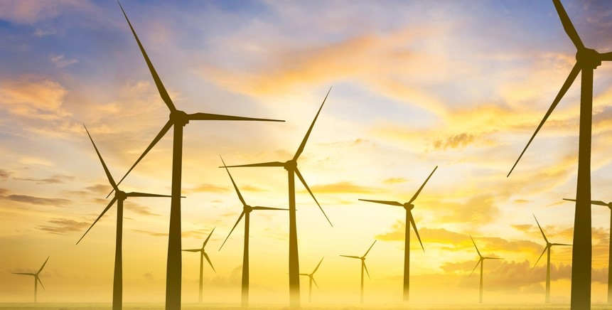

La energía eólica es aquella que se obtiene a partir de la fuerza del viento, llamada también energía cinética del viento y se utiliza para producir electricidad. Estamos ante una energía renovable, ya que el viento es un recurso renovable, que también es limpia y respetuosa con el medio ambiente. Esto no significa que sea inocua o que no tenga ningún impacto negativo, todos las cosas lo tienen, pero en este caso se trata de una energía renovable con un impacto ambiental muy bajo, en comparación a las energías no renovables o a otras renovables, y que resulta ser muy eficiente.
Para aprovechar la energía del viento y transformarla en electricidad, es necesario construir parques eólicos en zonas poco pobladas. En estos parques se colocan aerogeneradores que transforman la energía cinética en energía eléctrica.
Leer más ↓
El viento es una fuente natural, infinita y disponible en muchas regiones del mundo.
No produce gases contaminantes ni contribuye al calentamiento global.
Una vez instalado, el mantenimiento y operación son relativamente económicos.
Ideal para zonas rurales donde puede coexistir con agricultura o ganadería.
Disminuye la necesidad de importar combustibles fósiles y energía externa.
Los aerogeneradores modernos son cada vez más eficientes y silenciosos.
Es la aplicación más común. Los parques eólicos utilizan aerogeneradores para transformar la energía cinética del viento en electricidad, abasteciendo hogares, industrias y ciudades enteras.
Las aerobombas eólicas permiten extraer agua de pozos profundos, especialmente útil en zonas rurales y agrícolas. Pueden elevar hasta 500 litros por hora.
El viento puede accionar molinos para moler granos o generar calor por rozamiento mecánico. También se usa en bombas de calor para climatizar espacios.
El viento impulsa embarcaciones como veleros y se combina con otras fuentes como la solar o hidroeléctrica para crear sistemas energéticos más eficientes.